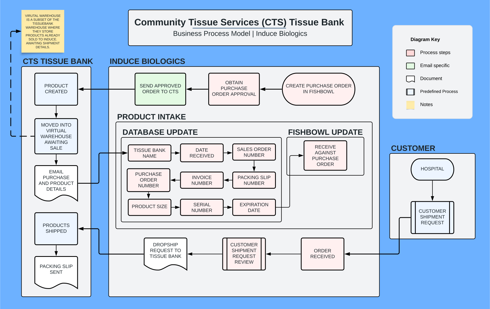

Purpose of the Dashboard:
Workflow Diagrams
The purpose of a Workflow Diagram (Business Process Model and Notation) is to provide a visual representation of business processes, helping to improve understanding of the company's workflows. It creates an intuitive, easy-to-use reference of the steps involved in fulfilling the day to day tasks in the company.
Inventory Tracking
Being able to reliably track and report on company inventory at all times. In order to answer specific questions such as:
-
Where is the piece of inventory with a particular serial number?
-
What inventory is sitting on the shelf at the supplier?
-
What inventory is sitting on a Consignment shelf at the customer location?
-
What products have been reported as used in the field? Have they been issued a PO?
Collecting and providing data for reports.
Enabling the automatic creation of reports. The strict content and structure of the reports has not yet been decided. These reports will provide an insight into company KPI's. More progress can be made on reports when the database structure is confirmed. The reporting capability will eventually be able to answer questions such as:
-
What are the recent sales that have happened?
-
What accounts were previously active and are not anymore?
-
What are the product and inventory trends of the company's offerings?
Workflow Diagrams (click to navigate)
Terms definitions:
-
Client
-
Supplier
-
Consignment
-
Warehouse
-
Dropship
-
Induce
-
Usage Sheet
-
Order Form
-
Purchase Order
-
Sales Order
-
Transfer Order
Click here for a live link.
Click here for a live link.
